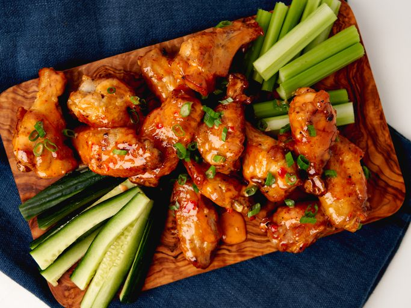

Bang Bang Wings

These bang bang wings are air fried, making them that much more awesome!
They’re tossed in a perfectly balanced sauce with a sweet heat that lingers in a way
that makes you want more. You could also grill, fry or roast them before
tossing them in the sauce.
Ingredients
- 2 pounds chicken wings and drummettes
- 1 tablespoon olive oil
- 2 teaspoons kosher salt,divided
- 1/2 teaspoon freshly ground black pepper
- 1 teaspoon granulated garlic
- 1/2 cup mayonnaise
- 1/4 cup sweet chili sauce
- 2 1/2 tablespoons Sriracha sauce
- 1/4 cup sliced green onion
Steps
- Toss wings with olive oil, 1 1/2 teaspoons salt, pepper, and garlic powder.
Preheat the air fryer to 400 degrees F (200 degrees C) according to
manufacturer’s directions.
- Add wings to the air fryer basket, and cook until golden brown and crispy,
tossing every 8 to 10 minutes, 23 to 25 minutes total. You may have to work
in batches.
- Meanwhile, combine remaining 1/2 teaspoon salt with mayonnaise, sweet chili
sauce, and Sriracha in a large bowl. Stir well to combine and set aside.
- Toss hot wings with sauce mixture until well coated. Sprinkle with green onions
and serve